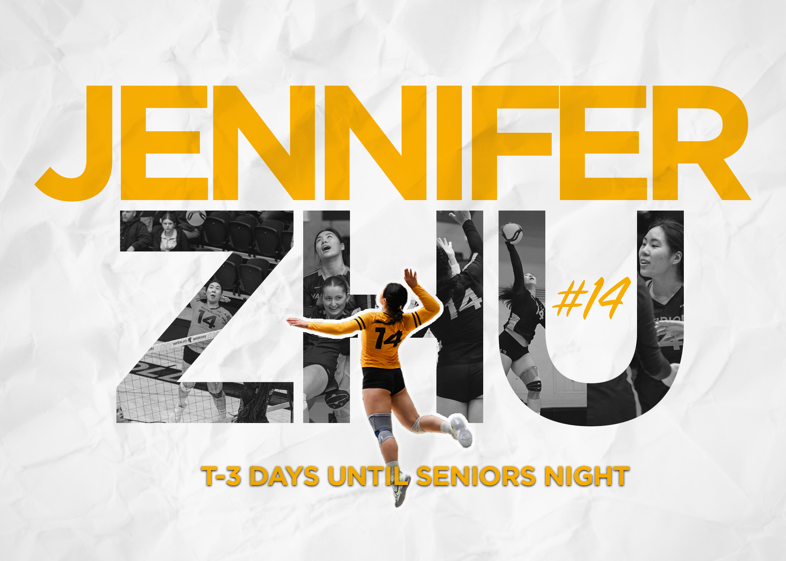
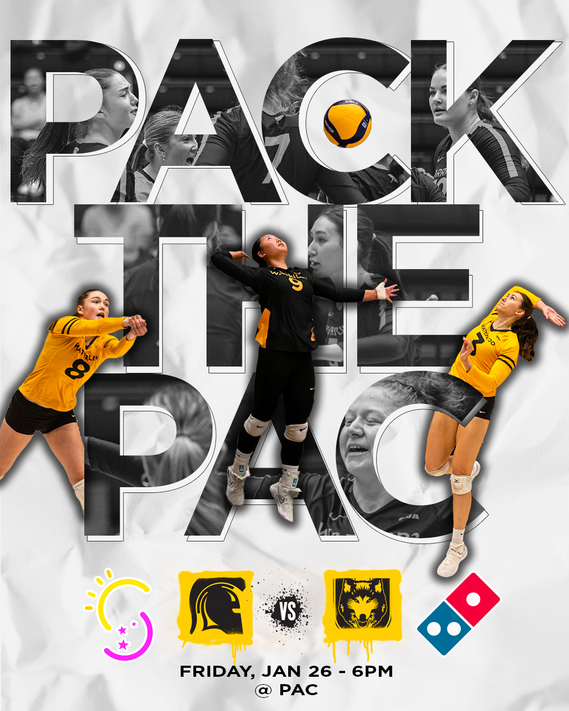
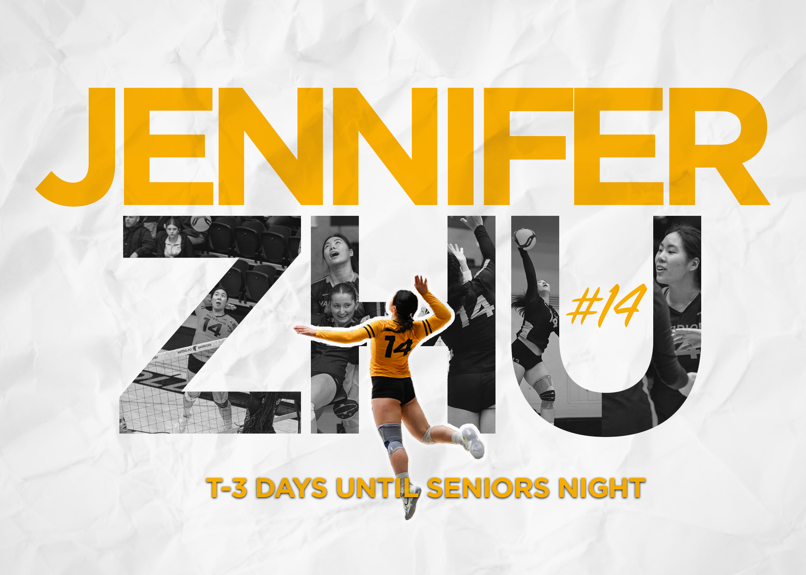
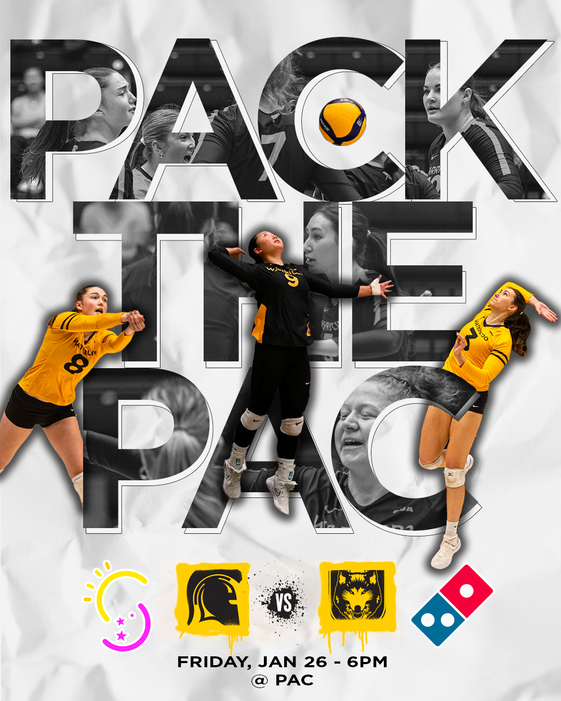
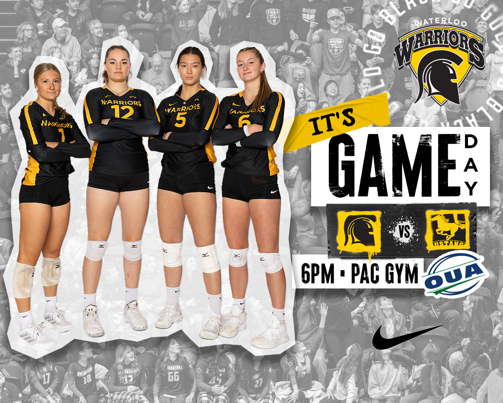
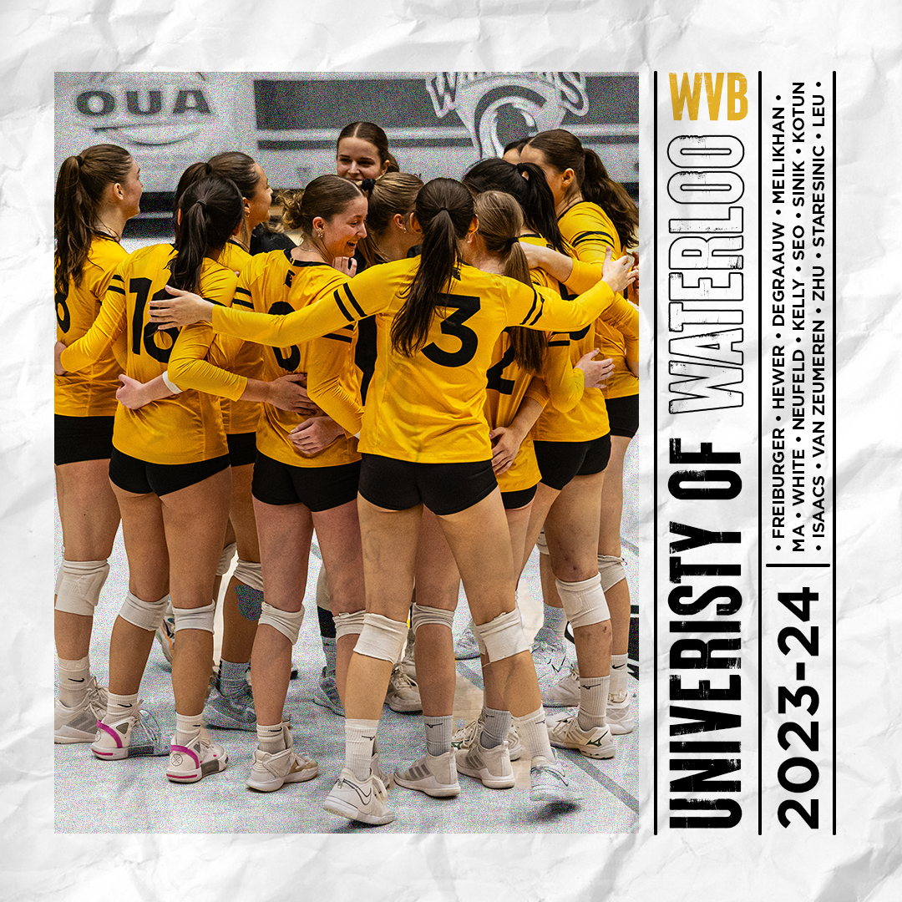
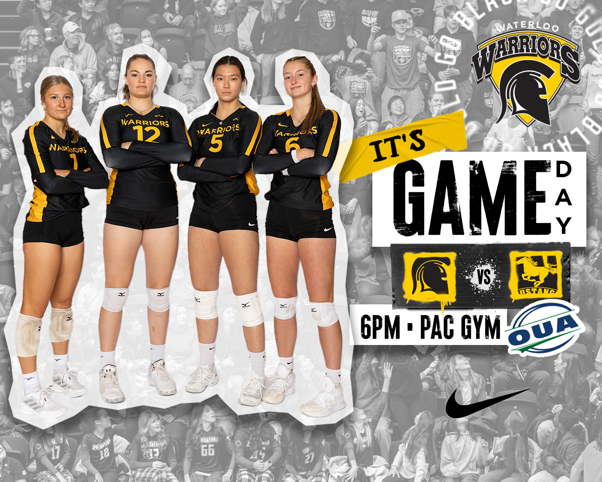
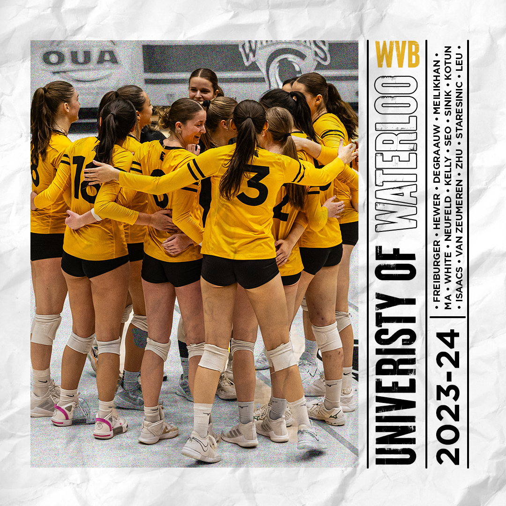

Type of work: Graphic Design, Social Media, Content Creation
Date: Sept 2023 - Present
Location: Waterloo, ON
Type of work: Graphic Design, Social Media, Content Creation
Date: Sept 2023 - Present
Location: Waterloo, ON
The University of Waterloo Women's Varsity Volleyball team’s Instagram account was limited by general graphics and templates provided by athletics, which lacked a unique and personal reflection of our team’s identity and culture. The existing visuals were generic, focusing more on the overall school brand rather than our team's unique spirit. We needed to maintain brand consistency while also creating designs that felt personal to our players and distinctive to our team culture.
By designing customized visuals and graphics, we went beyond standard templates, allowing our Instagram presence to better represent the team’s individuality and camaraderie. The new visuals maintained alignment with the university’s branding guidelines while capturing our team’s culture, resonating more deeply with both players and supporters. This personalized approach strengthened team identity and fostered stronger engagement with our audience, creating a more authentic and vibrant social media presence.
 



.png) 


